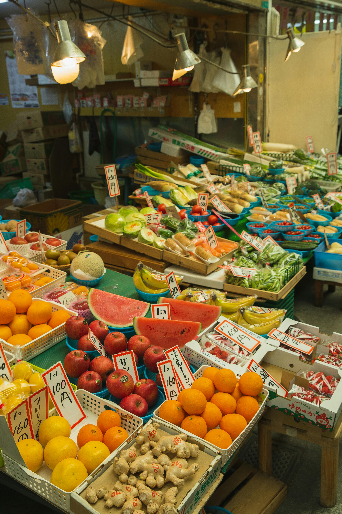
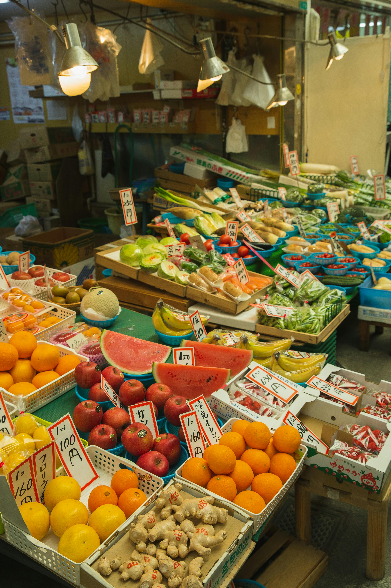

As health challenges like diabetes, high blood pressure, and dietary needs are becoming more common even among younger people, finding the right food to support your health is essential.
Why Choose Us?
* We provide fresh vegetables, fruits, and grains carefully selected for health-conscious individuals.
* Our products are ideal for people with health concerns like diabetes, high blood pressure, and those on specific diets.
* We offer personalized food recommendations based on your health needs, such as fasting blood sugar levels or other conditions.
* FitChoiceGrocery is dedicated to helping you choose the right foods that suit your health condition and support a balanced lifestyle.
* Our aim is to make healthy living simple by offering the best options for your dietary needs.
* We motivate and guide you towards making the best food choices for your overall well-being.
 
